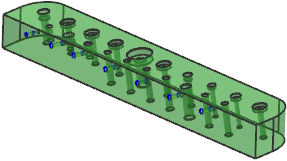
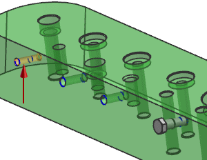
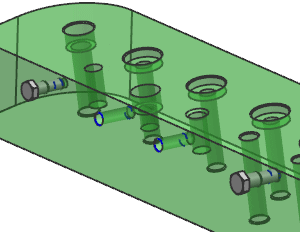

Add a Part Families member from the Reuse Library
-
On the Standard toolbar, click Open
 .
.
-
In the Open dialog box, click Options.
-
In the Assembly Load Options dialog box, set the following:
-
Load = From Folder
-
Use Partial Loading =

-
-
Click OK.
-
Open asm2_85_reuse_library_assembly1.

-
In the Reuse Library Navigator, select Part Families and expand the Member Select panel.
-
Drag the Hex Fit Bolt to one of the holes.

-
Release the mouse button to place the bolt.

In the Add Reusable Component dialog box, note that the hole was created as a Threaded Hole, size M12 x 1.25. The member part is created to read the hole data and use the correct Size value. In the Primary Parameters group, the Size and Length parameters can be changed.
-
Expand the Settings group and select the Display Preview Window
 check box.
check box.
The Component Preview Window is displayed in the lower right-hand corner of the graphics window.
-
Click OK to add the single bolt.
-
Drag the Hex Fit Bolt again, this time to a different size hole.

Notice that the Primary Parameters change with the hole data.
-
Click OK to add the bolt.

-
Use Undo
 twice to remove both bolts.
twice to remove both bolts.